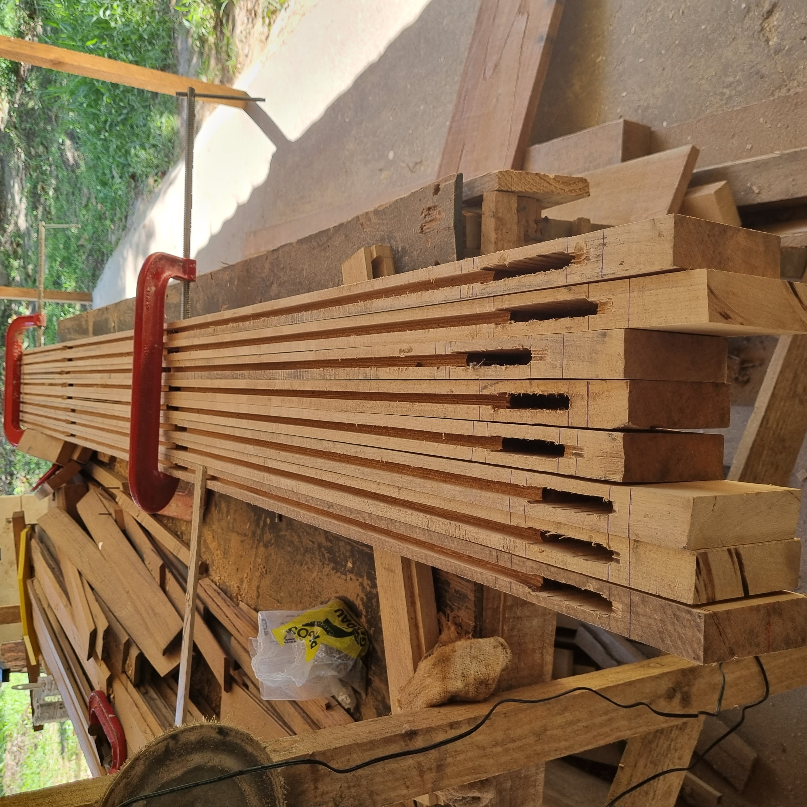

Registros de Canteiro e Oficinas
Acompanhamento técnico das etapas estruturais, restauro artístico e fabricação dos elementos em Garapeira.




Taubaté / SP
A atuação da Lignum na Villa Santo Aleixo, em parceria com a Construtora Biapó, englobou a coordenação ampla de uma obra de restauração completa da edificação. O escopo envolveu o restauro de fachadas, o refazimento de simalhas e platibandas, além do minucioso trabalho de restauração e reconstituição de assoalhos em madeira e a execução de forro em lambril novo. Nossa liderança técnica também gerenciou os serviços de prospecções pictóricas, restauração de pintura parietal, instalações elétricas, hidráulicas e sistema de SPDA.
Paralelamente à gestão do canteiro, a equipe atuou diretamente na fabricação artesanal de portas e janelas em madeira nobre, estendendo o padrão de excelência para a área externa com a execução de mobiliário exclusivo em gabião e madeira.
Construtora Biapó
Coordenação da obra, fabricação de esquadrias e mobiliário externo
Madeira de Lei (Garapeira)
2023 e 2024
Acompanhamento técnico das etapas estruturais, restauro artístico e fabricação dos elementos em Garapeira.
